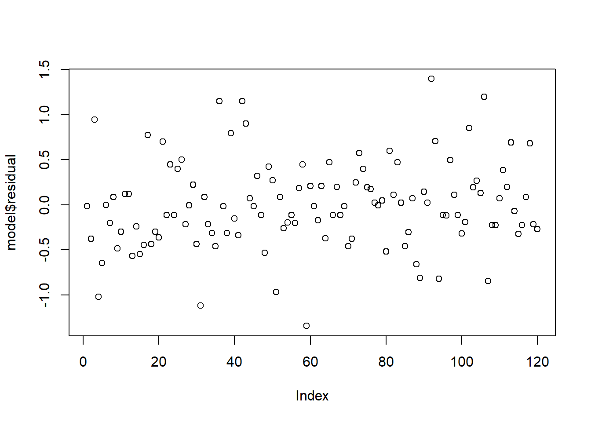
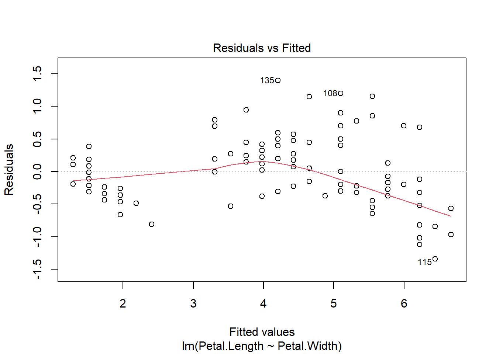
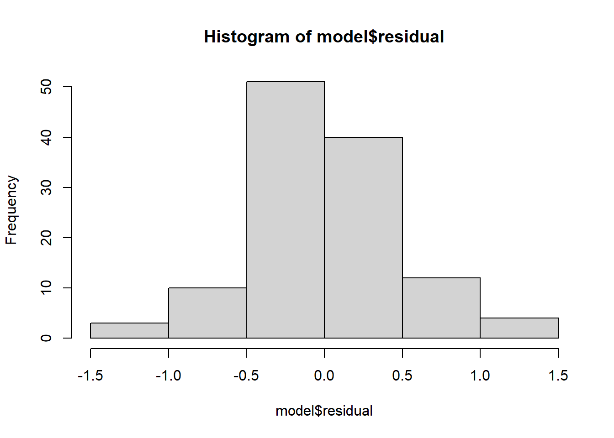

install.packages('psych')Review R dan Regresi Linier Sederhana
Intro to R and Excel
Offline di Departemen Matematika
Review R
Instalasi Library
install.packages (Nama Packages) , untuk mengunduh library yang diperlukan kita dapat mengganti Nama Packages dengan packages yang kita butuhkan. Jangan lupa untuk menambahkan tanda " " atau ' ' sebelum dan sesudah Nama packages
Mengimport Library
library (Nama Packages) , untuk mengimport atau menggunakan library yang sudah diunduh sebelumnya kita dapat menggunakan fungsi tersebut dengan mengubah Nama Packages menjadi packages yang dibutuhkan atau yang sudah diunduh sebelumnya. Pada bagian import library tidak diperlukan tanda " " atau ' '
library(psych)Membaca Data
pada dasarnya pembacaan file di R studio bisa berbagai macam format file , untuk contohnya:
- library (
readxl) untuk membaca data yang berformat.xlsxatau.xls - library (
readr) untuk membaca data yang berformat.csv
library(readxl)
library(readr)Tahap - Tahap Membaca Data
- Membuka Menu File pada RStudio

- Memilih File / Data yang diinginkan

- Memilih section
import dataset

- Megcopy File Path URL

setelah mendapatkan file url , selanjutnya akan dibaca menggunakan read_csv ('file_url') , jangan lupa untuk mengubah file url sesuai file url yang didapatkan dari tahap mecari data. Selain itu jangan lupa untuk menambahkan tanda ' ' atau " " sebelum dan sesudah file url yang didapatkan.
library(readr)
data <- read_csv('~/Downloads/Iris.csv')Memeriksa Data
Untuk melanjutkan modul ini, akan digunakan dataset iris bawaan r yang dapat diakses dengan syntax berikut.
data(iris)
data <- irisUntuk memeriksa data dapat menggunakan banyak cara diantaranya:
- View (
data) , untuk melihat keseluruhan data - head (
data) , untuk melihat 6 data teratas - tail (
data) , untuk melihat 6 data terbawah
jangan lupa untuk mengubah variabel data sesuai dengan variabel yang didefinisikan sebelumnya.
View(data)head(data) Sepal.Length Sepal.Width Petal.Length Petal.Width Species
1 5.1 3.5 1.4 0.2 setosa
2 4.9 3.0 1.4 0.2 setosa
3 4.7 3.2 1.3 0.2 setosa
4 4.6 3.1 1.5 0.2 setosa
5 5.0 3.6 1.4 0.2 setosa
6 5.4 3.9 1.7 0.4 setosatail(data) Sepal.Length Sepal.Width Petal.Length Petal.Width Species
145 6.7 3.3 5.7 2.5 virginica
146 6.7 3.0 5.2 2.3 virginica
147 6.3 2.5 5.0 1.9 virginica
148 6.5 3.0 5.2 2.0 virginica
149 6.2 3.4 5.4 2.3 virginica
150 5.9 3.0 5.1 1.8 virginicaTipe Data
Untuk memperoleh informasi tipe data dari sebuah data kita akan menggunakan str (data) , jangan lupa untuk mengubah data sesuai variabel yang didefinisikan sebelumnya
str(data)'data.frame': 150 obs. of 5 variables:
$ Sepal.Length: num 5.1 4.9 4.7 4.6 5 5.4 4.6 5 4.4 4.9 ...
$ Sepal.Width : num 3.5 3 3.2 3.1 3.6 3.9 3.4 3.4 2.9 3.1 ...
$ Petal.Length: num 1.4 1.4 1.3 1.5 1.4 1.7 1.4 1.5 1.4 1.5 ...
$ Petal.Width : num 0.2 0.2 0.2 0.2 0.2 0.4 0.3 0.2 0.2 0.1 ...
$ Species : Factor w/ 3 levels "setosa","versicolor",..: 1 1 1 1 1 1 1 1 1 1 ...Penjelasan tipe data:
num: Num mengartikan bahwa variabel tersebut adalah nilai numerik / sebuah angkachr: Chr mengartikan bahwa variabel tersebut adalah nilai yang berupa tulisan atau bisa disebut juga string
Statistik Deksriptif
Untuk memeriksa statisika deskriptif dari data dapat menggunakan:
- library (
psych) - library (
DescTools) - library (
moments)
Untuk penjelasan fungsi statistik deskriptif bisa dilihat pada tabel berikut:
| Fungsi | Penjelasan | Library |
|---|---|---|
mean(data) |
Menghitung rata-rata dari data. | Base R |
median(data) |
Menghitung nilai tengah dari data. | Base R |
sum(data) |
Menghitung jumlah total elemen dalam data. | Base R |
sd(data) |
Menghitung standar deviasi dari data. | Base R |
var(data) |
Menghitung varians dari data. | Base R |
Mode(data) |
Menghitung modus dari data, nilai yang paling sering muncul. | DescTools |
standarerror <- sd(data)/sqrt(length(data)) |
Menghitung standar error dari data. | Base R |
sort(data) |
Mengurutkan elemen dalam dari nilai terkecil ke terbesar. | Base R |
min(data) |
Menghitung nilai minimum dari data. | Base R |
max(data) |
Menghitung nilai maksimum dari data. | Base R |
range(data) |
Menghitung selisih antara nilai maksimum dan minimum dari data. | Base R |
quantile(data, prob=0.25) |
Menghitung kuartil ke-1 (Q1) atau persentil ke-25 dari data. | Base R |
quantile(data, prob=0.75) |
Menghitung kuartil ke-3 (Q3) atau persentil ke-75 dari data. | Base R |
skewness(data) |
Menghitung kemiringan distribusi (skewness) dari data. | moments |
kurtosis(data) |
Menghitung keruncingan distribusi (kurtosis) dari data. | moments |
library(psych)
library(DescTools)
library(moments)mean(data$Petal.Length)[1] 3.758median(data$Petal.Length)[1] 4.35sd(data$Petal.Length)[1] 1.765298var(data$Petal.Length)[1] 3.116278untuk melihat keseluruhan statistika deskriptif dapat menggunakan :
- summary (
data) , - describe (
data) , menggunakan librarypsychuntuk statistika deksriptif yang lebih advance
summary(data) Sepal.Length Sepal.Width Petal.Length Petal.Width
Min. :4.300 Min. :2.000 Min. :1.000 Min. :0.100
1st Qu.:5.100 1st Qu.:2.800 1st Qu.:1.600 1st Qu.:0.300
Median :5.800 Median :3.000 Median :4.350 Median :1.300
Mean :5.843 Mean :3.057 Mean :3.758 Mean :1.199
3rd Qu.:6.400 3rd Qu.:3.300 3rd Qu.:5.100 3rd Qu.:1.800
Max. :7.900 Max. :4.400 Max. :6.900 Max. :2.500
Species
setosa :50
versicolor:50
virginica :50
describe(data) vars n mean sd median trimmed mad min max range skew
Sepal.Length 1 150 5.84 0.83 5.80 5.81 1.04 4.3 7.9 3.6 0.31
Sepal.Width 2 150 3.06 0.44 3.00 3.04 0.44 2.0 4.4 2.4 0.31
Petal.Length 3 150 3.76 1.77 4.35 3.76 1.85 1.0 6.9 5.9 -0.27
Petal.Width 4 150 1.20 0.76 1.30 1.18 1.04 0.1 2.5 2.4 -0.10
Species* 5 150 2.00 0.82 2.00 2.00 1.48 1.0 3.0 2.0 0.00
kurtosis se
Sepal.Length -0.61 0.07
Sepal.Width 0.14 0.04
Petal.Length -1.42 0.14
Petal.Width -1.36 0.06
Species* -1.52 0.07Split Data
untuk membuat split data kita dapat menggunakan : sample() ,
untuk memperoleh hasil yang selalu sama jangan lupa untuk mengatur seed dengan cara : set.seed(
42) , angka42dapat digantikan sesuai yang diinginkan.
set.seed(42)
index <- sample(1:nrow(data), size = 0.8 * nrow(data))
train_data <- data[index, ] # 80% of the data
test_data <- data[-index, ] # 20% of the datasize dapaat diatur sesuai ketentuan , jika ketentuannya diambil 70% data maka dapat mengubah size menjadi 0.7.
Regresi Linier Sederhana
Untuk mendefinisikan suatu regresi linier sederhana kita dapat menggunakan fungsi lm() , dengan cara:
lm(variabel response ~ variabel prediktor , data = data)
dimana :
- Variabel Response (
y) - Variabel Prediktor (
X)
model <- lm(Petal.Length ~ Petal.Width, data = train_data)
model
Call:
lm(formula = Petal.Length ~ Petal.Width, data = train_data)
Coefficients:
(Intercept) Petal.Width
1.065 2.241 Interpretasi summary(model)
Fungsi summary(model) dapat digunakan untuk melihat informasi mengenai model yang telah dibentuk.
summary(model)
Call:
lm(formula = Petal.Length ~ Petal.Width, data = train_data)
Residuals:
Min 1Q Median 3Q Max
-1.34299 -0.29932 -0.01289 0.21392 1.39796
Coefficients:
Estimate Std. Error t value Pr(>|t|)
(Intercept) 1.06470 0.08205 12.98 <2e-16 ***
Petal.Width 2.24096 0.05813 38.55 <2e-16 ***
---
Signif. codes: 0 '***' 0.001 '**' 0.01 '*' 0.05 '.' 0.1 ' ' 1
Residual standard error: 0.4858 on 118 degrees of freedom
Multiple R-squared: 0.9264, Adjusted R-squared: 0.9258
F-statistic: 1486 on 1 and 118 DF, p-value: < 2.2e-16Visualisasi Model
Untuk membuat visualisasi regresi linier sederhana, lakukan langkah-langkah berikut: 1. Buat scatter plot variabel respons dan variabel prediktor dengan function plot(pred, resp) 2. Buat garis regresi dengan function abline(model) 3. Buat keterangan garis regresi dengan function legend() (*optional)
# Scatter Plot Petal.Width ~ Petal.Length
plot(iris$Petal.Width,
iris$Petal.Length,
xlab = "Petal Width",
ylab = "Petal Length",
main = "Plot Regresi Petal Length ~ Petal Width",
pch = 20)
# Garis Regresi
abline(model,
col = "red",
lwd = 2)
legend("bottomright",
legend = "Garis Regresi",
col = "blue",
lwd = 2,
bty = "n")
Interval Kepercayaan dan Interval Prediksi
Interval Kepercayaan untuk taksiran koefisien dapat dihitung dengan fungsi confint(model)
confint(model, level = 0.9) 5 % 95 %
(Intercept) 0.9286741 1.200722
Petal.Width 2.1445814 2.337330Interval Prediksi untuk suatu nilai-nilai di luar data yang digunakan untuk pemodelan dapat dihitung dengan fungsi predict(model, newdata, interval='prediction')
predict(model, newdata = test_data, interval = "prediction", level = 0.9) fit lwr upr
7 1.736985 0.9237712 2.550199
11 1.512889 0.6986056 2.327173
12 1.512889 0.6986056 2.327173
19 1.736985 0.9237712 2.550199
23 1.512889 0.6986056 2.327173
28 1.512889 0.6986056 2.327173
37 1.512889 0.6986056 2.327173
45 1.961081 1.1488239 2.773337
46 1.736985 0.9237712 2.550199
51 4.202036 3.3930740 5.010999
52 4.426132 3.6168682 5.235396
56 3.977941 3.1691650 4.786717
59 3.977941 3.1691650 4.786717
70 3.529750 2.7210025 4.338497
75 3.977941 3.1691650 4.786717
78 4.874323 4.0641131 5.684533
79 4.426132 3.6168682 5.235396
82 3.305654 2.4967490 4.114559
91 3.753845 2.9451412 4.562549
95 3.977941 3.1691650 4.786717
101 6.667088 5.8485520 7.485624
106 5.770706 4.9572348 6.584176
112 5.322514 4.5109012 6.134128
116 6.218897 5.4031172 7.034676
117 5.098419 4.2875641 5.909274
127 5.098419 4.2875641 5.909274
133 5.994801 5.1802322 6.809370
134 4.426132 3.6168682 5.235396
137 6.442992 5.6258903 7.260094
148 5.546610 4.7341246 6.359095Untuk suatu nilai x tertentu, dapat dicari interval prediksinya dengan syntax berikut
predict(model, newdata = data.frame(Petal.Width=20), interval = "prediction", level = 0.9) fit lwr upr
1 45.88382 43.89859 47.86904Representasi Grafik Residual Model
Residual model dapat diakses dengan memanggil model$residual atau resid(model)
head(model$residual) 49 65 74 146 122 150
-0.012889406 -0.377940869 0.946154718 -1.018896745 -0.646609982 0.001581193 head(resid(model)) 49 65 74 146 122 150
-0.012889406 -0.377940869 0.946154718 -1.018896745 -0.646609982 0.001581193 Plot residual dapat dibentuk dengan cara-cara berikut.
plot(model$residual)
plot(model, 1)
hist(model$residual)